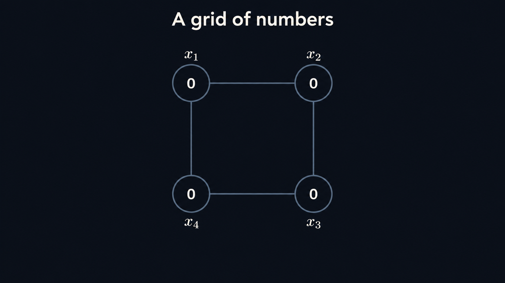
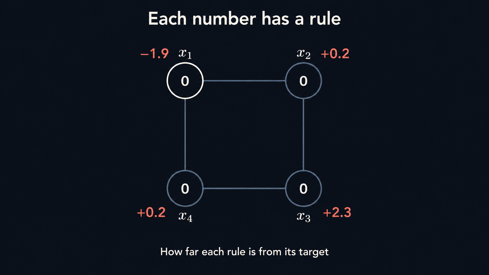
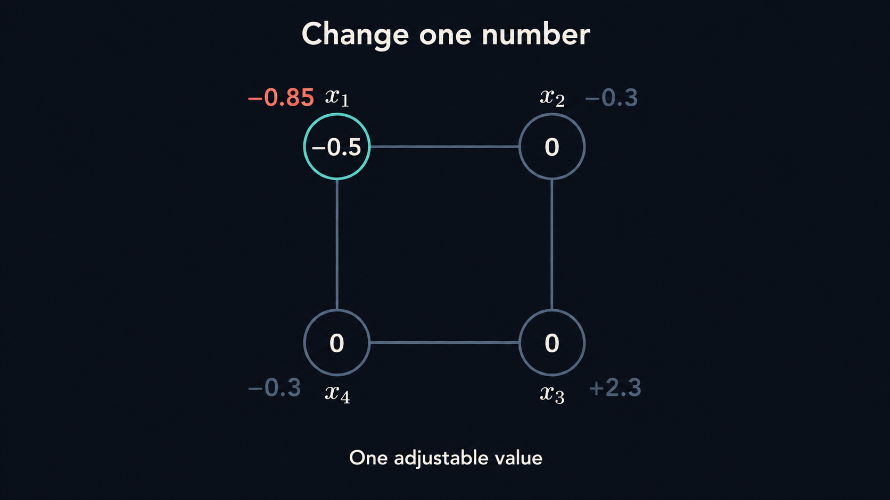
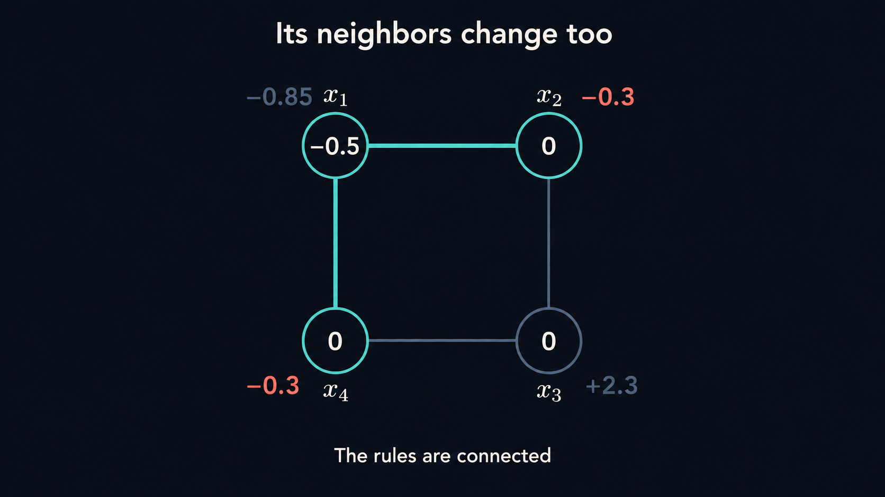
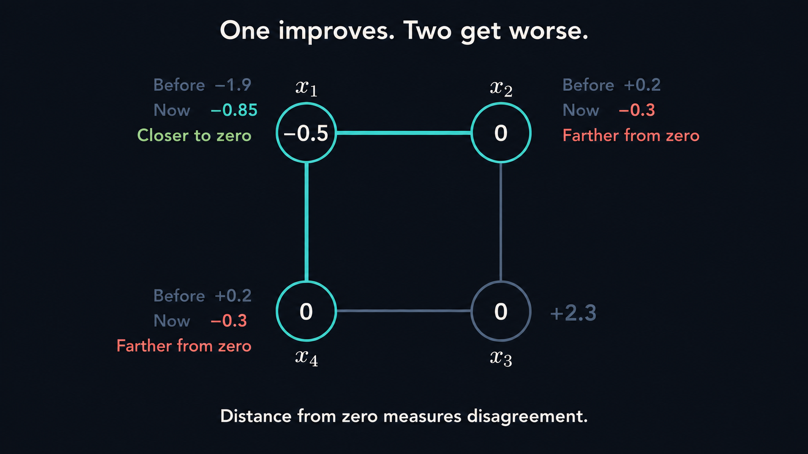
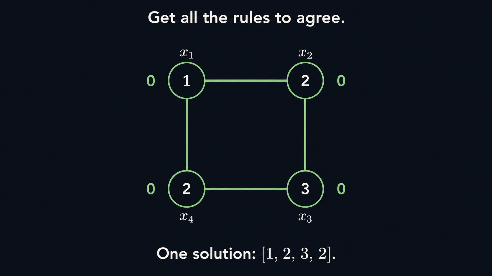

Suppose I give you a grid of numbers, and a rule that each number has to satisfy.


Hold the four numbers for one second. Introduce the four discrepancies, then highlight the first rule. Hold the end frame for one second.
You can change any of the numbers.

Select the upper-left number and change it from 0 to −0.5. Update every discrepancy simultaneously to its correct value; keep neighbor labels muted so focus stays on the selected number.
But changing one also affects the rules at its neighbors.

Keep values fixed. Trace the top and left connections, then highlight the two neighboring discrepancies. Hold so the viewer can follow both connections.
So a move that fixes one part of the grid can disturb another.

Keep current values fixed. Reveal before/now comparisons one at a time: the selected discrepancy is closer to zero, while both neighboring discrepancies are farther away. Use emphasis, not another numerical update.
Your task is to get all the rules to agree.

Transition from the current guess to the known teaching solution [1,2,3,2]. Bring all four discrepancies to zero together and hold for the final second. This depicts the goal, not execution of the discovered solver.